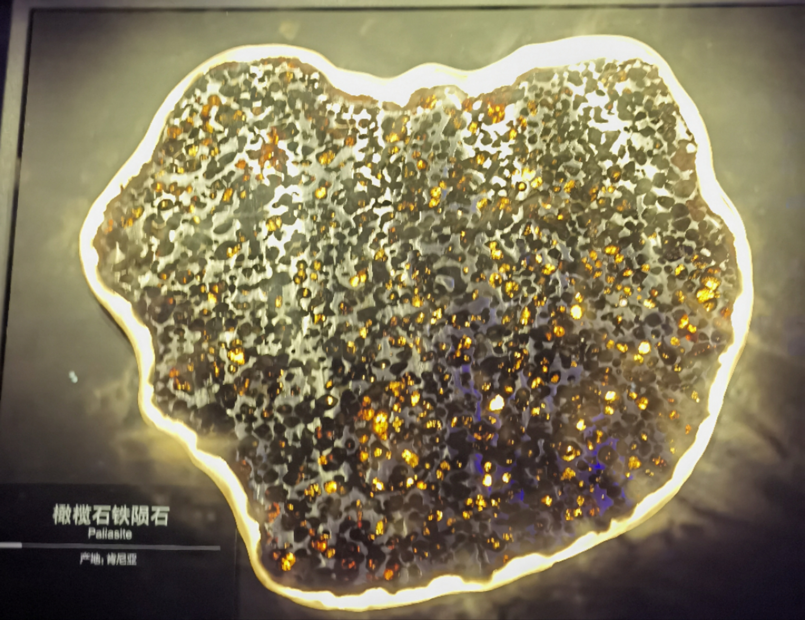
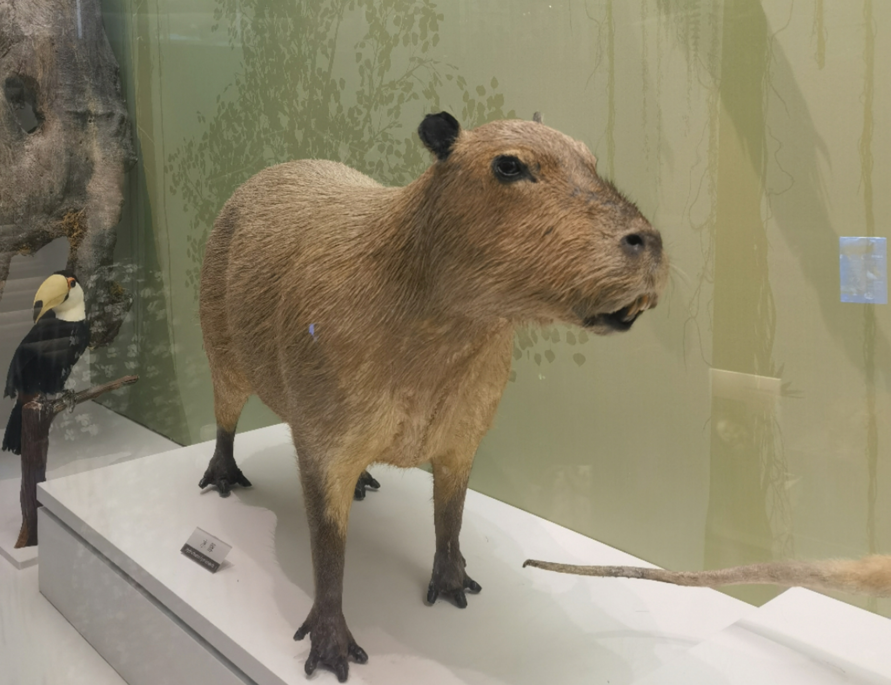

Natural History Museum
Nowadays, more and more universities have their own museum. Not long ago, the new museum of Sichuan University was completed and put into operation, after being closed for four years. I hope I can have the chance to visit soon. Besides, Chengdu Natural History Museum of Chengdu University of Technology is now requiring tickets, no longer free. I was lucky enough to go there when it needed reservation for free tours. What’s more, I visited Natural History Museum of National University of Singapore, which is small but have a sea of specimens. In addition, when I stayed at Tsinghua University, I found several museums operated by universities nearby.
I have visited some natural history museums and see lots of similarities among them. For example, the display of a tremendous amount of biological specimens is a must. Also, there are giant models or skeletons capturing your attention.
Here, I’m going to mainly talk about Chengdu Natural History Museum of Chengdu University of Technology, as a travelogue. It’s really hard to snag up an appointment on a busy weekend!
From the outside, it has a well-designed, sculpted exterior with a sense of modernity. Inspired by the western Sichuan Mountains, the design team incorporated the towering snow-capped mountains into the museum’s appearance.
The whole museum is divided into one underground floor and four above-ground floors, including 6 permanent and 2 temporary exhibition halls. The theme of the first floor is minerals and gems. Minerals never fail to amaze me with their splendid and shiny appearance. I love the pallasite most, which awakened my imagination of stars falling through darkness. In addition, a glass display case contains some minerals that can glow, including Opal, Aragonite, Calcite and Pyrite. I remember when I learned chemistry in high school, my teacher talked about the flame reaction, which has various colors like this.

Next, walking up to the second floor, we came to the world of dinosaurs. There are more than 30 dinosaur fossils, both authentic ones and replicas. In specific lights, the already huge dinosaurs appear even more tall and powerful. A large part of dinosaurs have incredibly long necks and makes people couldn’t help wondering how the body support its neck.

In the end, we come to the third floor, where the topics of exhibition halls revolve around biodiversity. There are numerous specimens of animals, all in different poses, some combined well with the landscapes. Although it’s carefully arranged and worth appreciating, large areas of grand scene specimen exhibition is so common in natural history museums and do not excite my mind. I have to roast that some specimens are ugly, such as capybara, one of my favorite animals.

In conclusion, overall it was a nice museum with rich exhibits, but I didn’t feel the urge to go again, not to mention it is said that now have to queue for long time to get in after buying tickets.